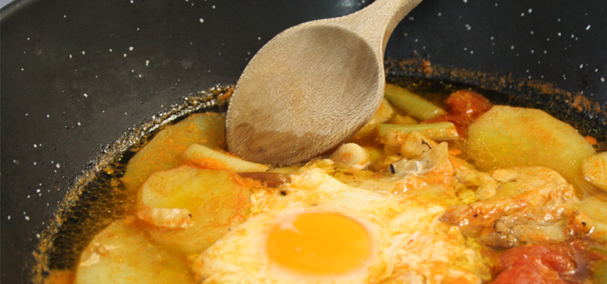

<div id="imagenPpal">
	
	<div id="textoPpal" class="gastronomia">
		La cocina elaborada con productos autóctonos nos da a saborear la Olla de Hierbas, la Olla de Pencas,
		el Rin-Ran, el Mojete, las Migas y la Gachamiga, además de los arroces con productos de caza y caracoles. 
		<br />
		Las carnes selectas y los sabrosos embutidos están elaborados con materias naturales y de forma artesanal.
		<br />
		Sus panaderías, cuecen excelente pan y pastas, como los mantecados, almendrados y rosegones. No hay que dejar
		de probar sus famosas "tortas de tajá" o ir de tapas por sus bares.
	</div>
</div>